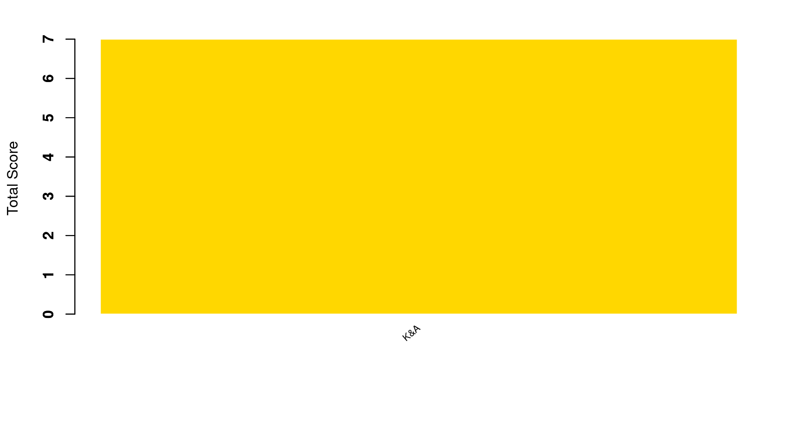

Content
You can view all the wildlife we recorded at this event on iNaturalist here.


| Records | 104 |
| Species | 38 |
| Verified species | 23 |
| Observers | 4 |
| Verified score | 490 |
| Unverified score | 1175 |
| Top species | Mercenaria mercenaria - Northern Quahog |
| Top species score | 40 |
Congratulations to K&A for taking the gold medal in this BioBlitz Battle! And well done to everyone for a great game and some fantastic wildlife finds.

| Species | Potential Score | Confirmed Score | |
|---|---|---|---|
| Claire Kitching | 18 | 221 | 153 |
| Alison Ruscoe | 29 | 453 | 119 |
| markbeech | 10 | 124 | 115 |
| kjbeechey | 1 | 7 | 7 |
A total of 4 species with a rarity score of 23 or higher have verified records:


Community verified records only
Click any image to view the original photo and licence details on iNaturalist.
| Name | Rarity Score | |
|---|---|---|

|
Chroicocephalus ridibundus - Black-headed Gull | 7 |
| Crepidula fornicata - Common Atlantic Slippersnail | 11 | |
| Sepia officinalis - European Common Cuttlefish | 10 | |

|
Mercenaria mercenaria - Northern Quahog | 40 |

|
Ruditapes philippinarum - Japanese Littleneck | 23 |
| Ensis | 10 | |

|
Mya arenaria - Soft-shelled Clam | 25 |
| Ostrea edulis - European Flat Oyster | 11 | |
| Mytilus edulis - Blue Mussel | 9 | |
| Lucanus cervus - European Stag Beetle | 8 | |

|
Austrominius modestus - Beaked Barnacle | 14 |

|
Carcinus maenas - European Green Crab | 7 |

|
Anemonia viridis - snakelocks anemone | 8 |

|
Actinia equina - Atlantic Beadlet Anemone | 8 |

|
Zostera - Eelgrasses | 20 |

|
Chondrus | 10 |

|
Colpomenia peregrina - Oyster-thief | 16 |

|
Scytosiphon lomentaria - Beanweed | 27 |

|
Chorda filum - Mermaid’s Tresses | 22 |

|
Himanthalia elongata - Thongweed | 11 |

|
Sargassum muticum - Japanese Wireweed | 10 |

|
Fucus spiralis - Spiral Wrack | 9 |

|
Fucus serratus - Saw Wrack | 8 |